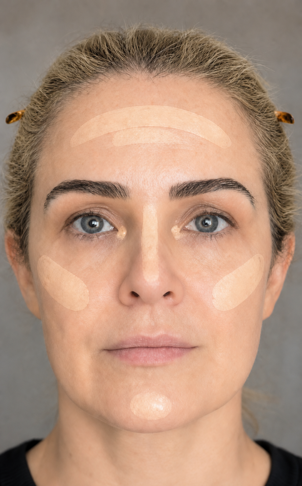

Centro para fora
Comece no centro da testa, nariz, ao redor do nariz e queixo. Espalhe o restante em direção às laterais, sem acumular produto.
Base não é uma máscara: é uma camada fina de equilíbrio, aplicada somente onde ela faz diferença.
Comece no centro da testa, nariz, ao redor do nariz e queixo. Espalhe o restante em direção às laterais, sem acumular produto.
Concentre uma segunda camada fina apenas nas manchas, no melasma e nas laterais do nariz. Pressione — não arraste.

Prefira cobertura média e acabamento natural. A pele continua aparecendo: esse é o resultado mais elegante para você.
Testa, contorno da mandíbula e pescoço pedem pouco produto. Desça qualquer sobra para uniformizar, sem criar contraste.
Escolha o tom que desaparece entre rosto, pescoço e colo — sem clarear ou aquecer propositalmente.
Use um pincel denso para distribuir uma camada muito fina. Finalize pressionando com esponja levemente umedecida nas áreas de maior cobertura.
Olhe de frente e de perfil. Se uma área ainda pedir correção, adicione produto só ali; não recomece a face inteira.